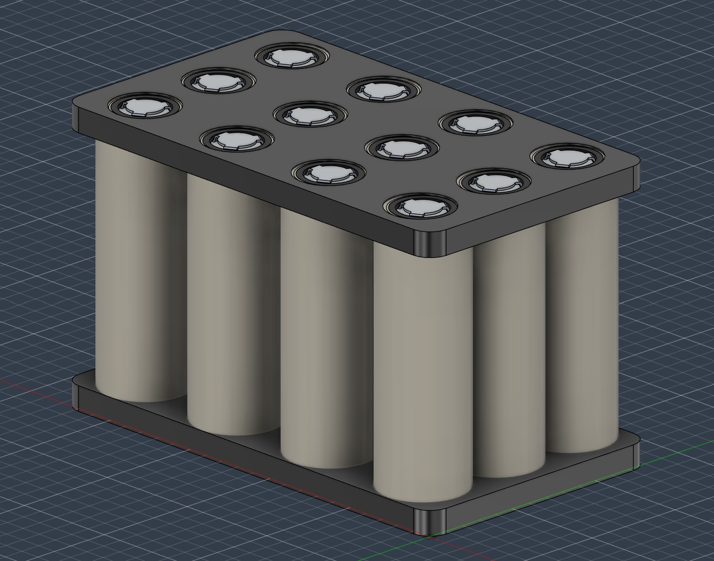

CAN Subsystem Work in a VTOL Team System
I contribute CAN transceiver circuitry and CAN, STM32, and radar communications firmware across interfaces with the broader team system.
A multidisciplinary VTOL platform.
Our senior-design team is developing a VTOL platform that combines flight control, RF data acquisition, ground-station communication, and CAN-connected subsystems. The system uses LoRa and MAVLink/ArduPilot alongside RF DAQ and radar-related work.
Communications work at the system boundary.
My work centers on the CAN subsystem: CAN transceiver circuitry, CAN firmware, STM32F413, and radar-CAN send/receive functionality. I develop this work within interfaces established by the broader team.
Interface discipline is engineering work.
The CAN subsystem has to fit alongside team-owned flight-control, CCU, DAQ, radar, and ground-station work. That has made interface discipline and clear ownership part of the engineering work: I focus on the communications portion while coordinating with the surrounding system.
The senior-design project remains in progress and has not yet reached a successful end-to-end flight demonstration.
4S3P lithium-ion pack architecture.
I designed a 4S3P lithium-ion battery pack for the drone and selected Molicel P42A cells for their discharge capability and robustness. The resulting design is 14.4 V nominal, 12.6 Ah, with 181.44 Wh of nominal energy.
